First, We take the Danes dataset and extract the nose point with the following:
The nose data point was extracted from the face dataset, and is returned with the 80x60 image when iterated through the dataset. We define our test and validation set by sending in indexes to cut on, as needed.
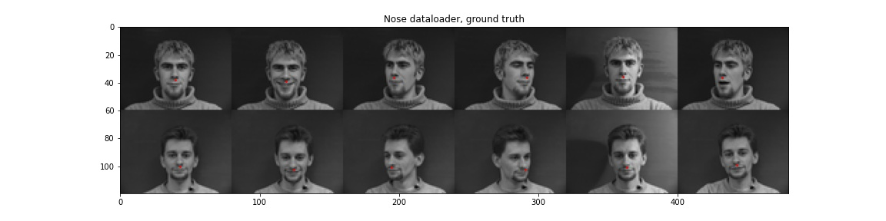
In my most successful attempt, I use:
After training, we see an average validation loss of 0.0001.
The training and validation loss are as follows:
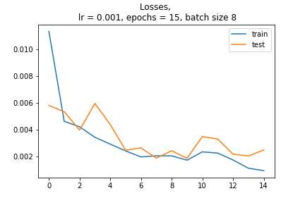
An increase in learning rate (from 1e-3 to 1e-4) shows a gentler slope for training, eventually reaching similar accuracies as our own. However, a decrease in learning rate (from 1e-3 to 1e-2) shows the model reaches a solution too fast, and plateaus after about the 5th batch.
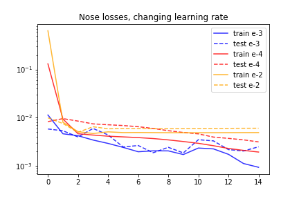
We had a relatively small batch size of 8. Decreaseing this further doesn't seem to change the outcomes much, but increaseing the batch size shows the training set plateauing early.
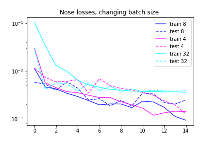
One of the initial failures was the model only predicting the average nose point. This was fixed by decreasing batch size. For an example of what this error looks like, see the outputs of the large batch size test from before:
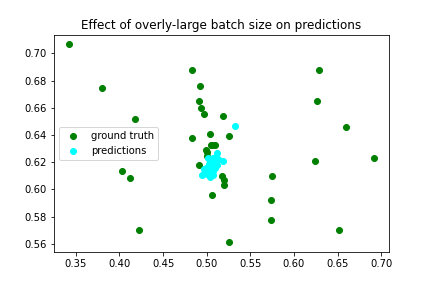
To fully understand this models strenths and weakenesses, we can look at the output of our leftover validation set. Right away, its clear that the first two rows have significant errors. This may be due to the eccess hair of the woman, where we didn't have as many women to train on, and the smaller head shape of the man. A particular success is the head turn tracking in the second to last row, where the model is able to track the turn of the head, and the second to last image, where the nose is guessed with almost no error.
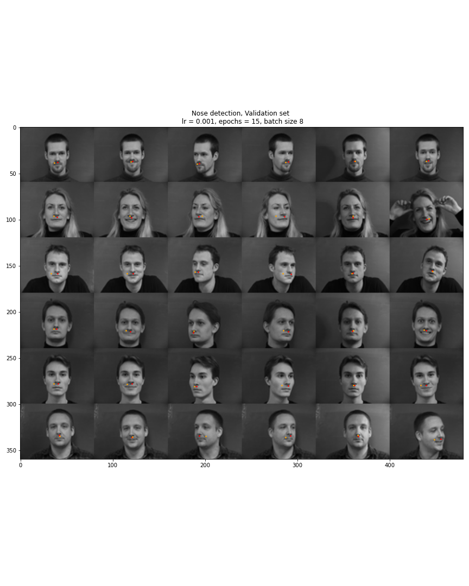
Next, we want to train
Show samples of data loader (5 points)
Here we can see examples of our data loader plain. In this implementation I deciced on scaling the images up to 240x180:
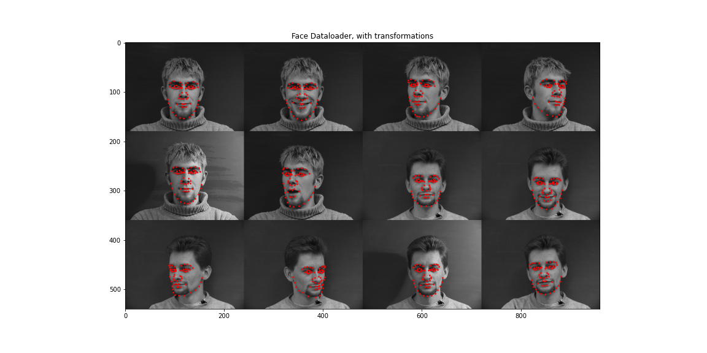
And with augmentations:
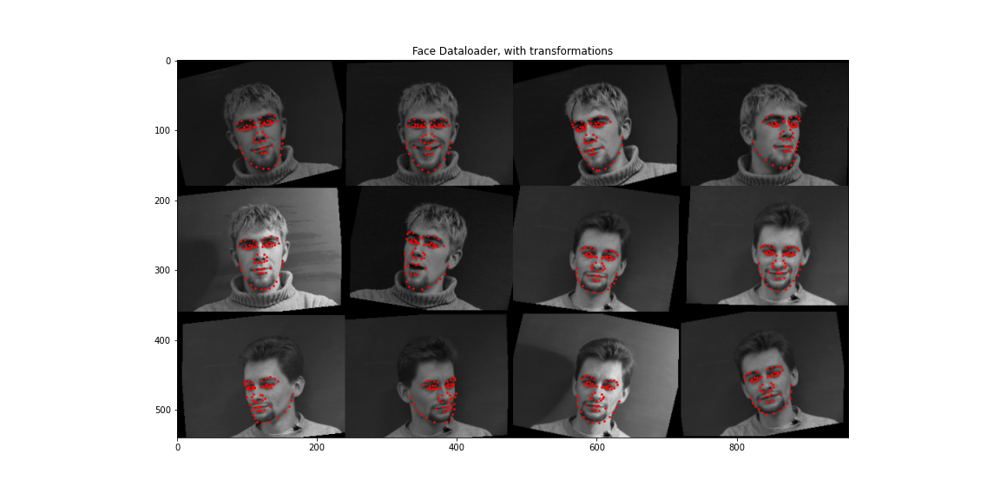
The augmentations applied were a color jitter, a random angular rotation from 15 to -15, and a random shift of 10 to -10 pixels.
Report detailed architecture (5 points)
Many, many, many architectures were tried. For most of them, the model returned an average face. I settled on the following architecture was settled on, drawing inspiration from the philosophy of the VGGNet. Each layer has a convolution of increasing size, folowed by a relu, followed by a max pool of kernel size 2 and stride 2. All but the first two kernels are 3x3, the first being larger helepd with training. Finally, there are three fully connected layers.
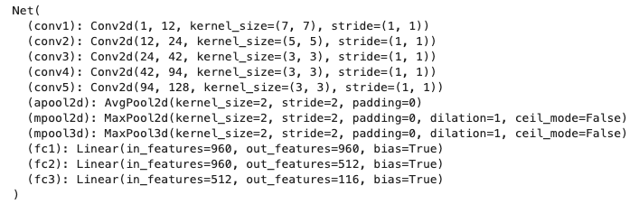
Plot train and validation loss (5 points)
Our model was trained with a batch size of 16, with a learning rate of 1e-3, for 200 epochs. We can see quick learning up to about 75 epochs, then a large jump, and what seems to be overfitting after that. Increasing the batch size could have improved the smoothness of this curve, but it was not felt to be necessary for the final results.
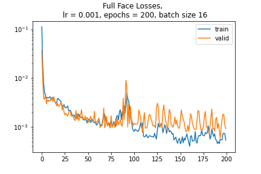
The final validation loss of the network on the 42 test images: 0.00092
Show 2 success/failure cases (5 points)
Plotting some unseen validation images, we can see that the model struggles in cases of thin heads, or large hair, like the first and second subjests. If does identify points fairly well for the forth subject (success in full frontal and side), where it turns well with the model. I believe that the hair for the woman caused confusion in the failure case, as well as beard confusion in the first case.
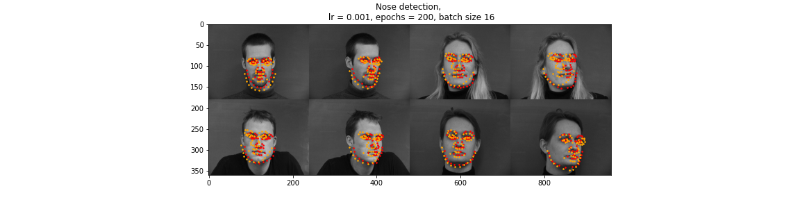
Show 2 success/failure cases (5 points)
Here, we visiualize the features of our kernels. SOme of the initial larger kernels look like edge detections!
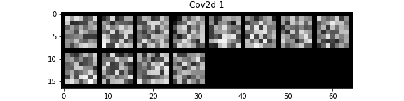
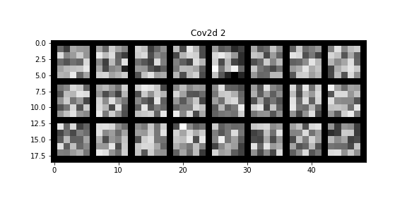
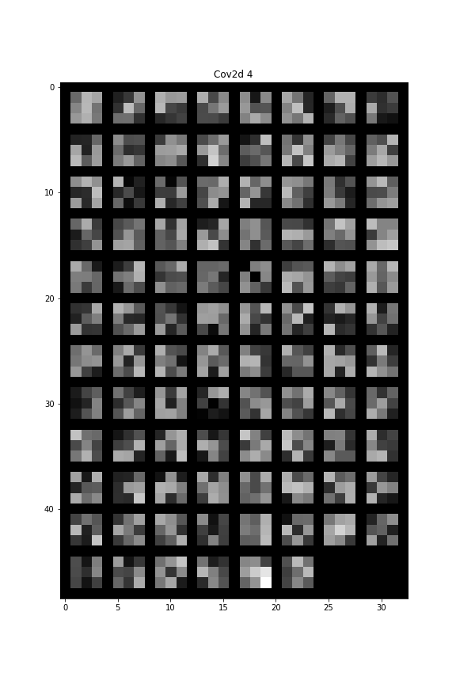
Submit a working model to Kaggle competition (15 points)
Yes I did submit to Kaggle. Under the name EAM. No it was not great.
Report detailed architecture (10 points)
For this section of the project, I trained a REsNet18 with a learning rate of 1e-3 and a batch size of 16 for 12 epochs. I changed the input to accept grayscale, and the output to be out 68*2 features.
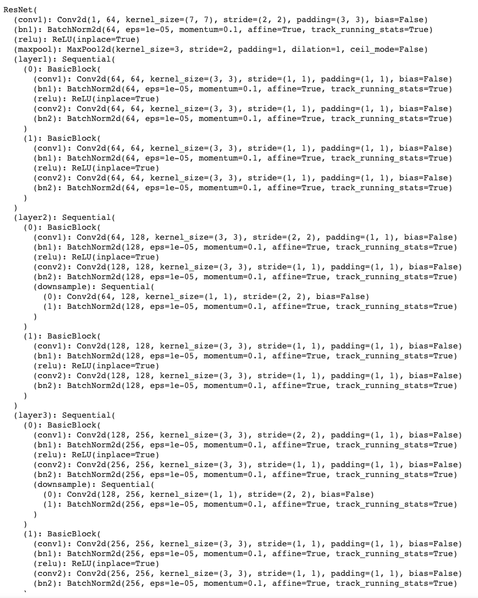
Plot train and validation loss (10 points)
Below is a plot of the training for this model:
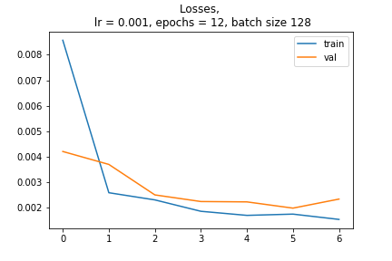
Visualize results on test set (10 points)
Here is the test set, with some obvious errors:
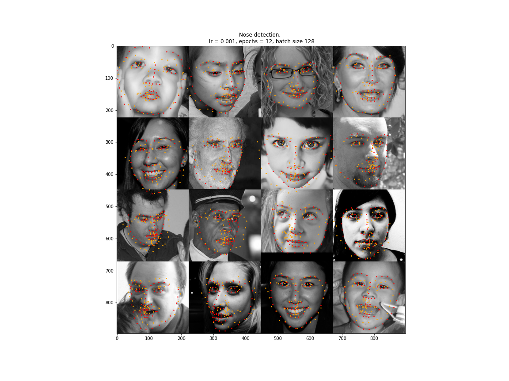
Run on at least 3 of your own photos (10 points)
I ran out of time for this one but I think it is very cool!